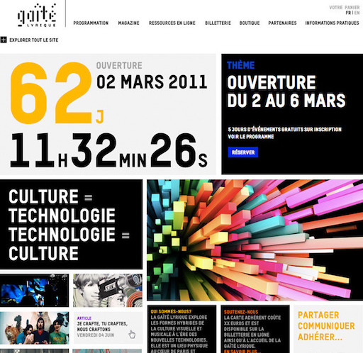
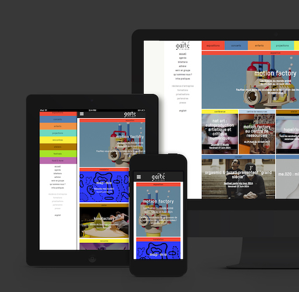

Website transformation
A new skin for this digital culture space in the centre of Paris.


A digital culture space with platforms showcasing their full potential.
At the very beginning of my time as Digital Communications Manager at la Gaîté lyrique, I was asked to start planning a website transformation.
For a space so concerned with pop cultures, the initial version launched in 2010 had a minimalist aesthetic which didn't quite reflect the appropriate identity.
It was bilingual, but not responsive.
Key updates:
- Drupal 6 to 7
- Responsive design
- Better menu navigation
- New aesthetic
My Role
- Product management, editorial roadmap, user journeys
- CMS improvement
- Internal information and feedback collection
- Monitoring of metrics post-release
The Team
- Development with a remote web agency Bunker Palace
- Artistic direction by Yorgo&co
- Internal stakeholders: webmaster, communications team, management, etc.

Conclusions
- Qualitative feedback: dynamic aesthetic, better comprehension of the multi-disciplinary nature of the space.
- Improved experience for internal content team.
- Significant decrease in bouncing rates
- Product management, editorial roadmap, user journeys